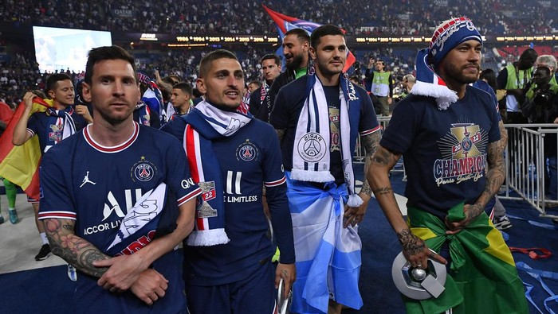

_2101082006.png)
_2101082006.png)

_2101082006.png)
_2101082006.png)


NEWS FEED
|  |
Tak Kunjung Juara Liga Champions, PSG Kurang Apa sih? Rabu, 20 Juli 2022 13:32 WIB Jakarta - Paris Saint-Germain belum juga mampu menjuarai Liga Champions. Rutin punya skuad bertabur bintang, apa sih yang kurang dari raksasa asal Prancis itu? |
 |
Erling Haaland Tak Ambil Pusing soal Ekspetasi Rabu, 20 Juli 2022 13:32 WIB Jakarta - Ekspetasi tinggi mengiringi kedatangan Erling Haaland ke Manchester City mengingat reputasi dan nilai transfernya. Meski demikian, Haaland santai saja. |
|
Terkuak, Rahasia Sukses Lionel Messi Bawa Argentina Jadi Juara Piala Dunia 2022: Jadi 'Bad Boy' Rabu, 20 Juli 2022 13:32 WIB Jakarta - Lionel Messi selama ini dikenal sebagai sosok yang fokus menunjukkan talentanya di dalam lapangan. Ia jarang terlibat konfrontasi dengan lawan. Oleh karena itulah Messi bisa tampil mengerikan. sudah ratusan gol ia cetak dan puluhan trofi juara ia bawa pulang. |